Next: Substructure Generation Up: Types of analysis Previous: Three-dimensional Navier-Stokes Calculations Contents
Calculations for incompressible fluids with a free surface are quite important in marine and oceanographic applications. The challenging part here is to predict the location of the free surface. A special subcategory are the problems in which the depth of the fluid is small compared to the other dimensions. In that case the general equations can be reduced to the so-called shallow water equations. These equations have a very similar behavior as the Navier-Stokes equations for compressible fluids, treated in the previous section. Linearization of these equations leads to the linear shallow water equations treated in Section 6.9.10.
Starting point for the derivation of the shallow water equations are the conservation of mass and momentum for incompressible fluids:
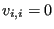 |
(729) |
and
Now, the depth-direction of the fluid is assumed to coincide with the
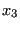
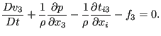 |
(731) |
The velocity in depth direction (first term) is assumed to be neglegible as well as the
viscous stress components 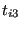 . Consequently, one obtains:
. Consequently, one obtains:
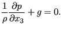 |
(732) |
Now, the depth is supposed to be composed of two contributions: a portion
extending from 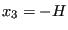 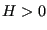 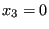 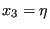 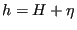 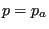 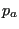 extending
from up to
extending
from up to
expressing the the pressure increases linearly from the surface into the depth direction.
The conservation of mass equation can be integrated in z-direction as follows:
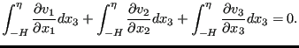 |
(734) |
Applying the Leibniz rule to the first two equations and direct integration to the last term leads to:
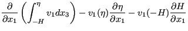 |
||
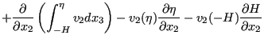 |
||
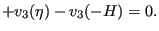 |
(735) |
The velocity at the bottom is zero,
i.e.
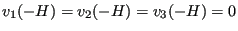
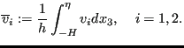 |
(736) |
This leads to:
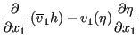 |
||
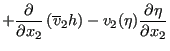 |
||
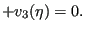 |
(737) |
Now, the vertical velocity at the free surface can be written as:
leading to:
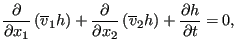 |
(739) |
since
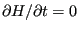 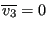
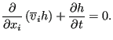 |
(740) |
This is identical to Equation 699
(conservation of mass for a compressible fluid)
in which 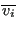 is replaced by
is replaced by
 by
by  .
.
Integrating the momentum equation, i.e. Equation (730) in 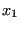 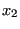
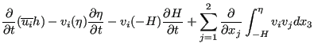 |
||
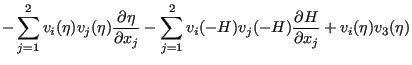 |
||
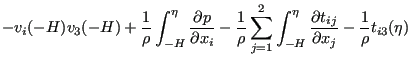 |
||
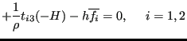 |
(741) |
Since the velocity at the bottom is zero, the third, sixth and eight term vanish. Due to the definition of the vertical velocity at the free surface, Equation (738) the second, fifth and seventh term also disappear. Due to Equation (733) the ninth term amounts to:
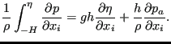 |
(742) |
The fourth term is approximated by:
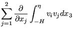 |
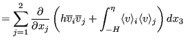 |
|
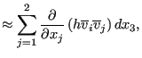 |
(743) |
and the tenth term is neglected. This leads to:
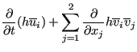 |
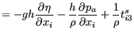 |
|
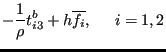 |
(744) |
Now,
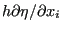
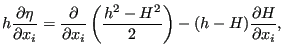 |
(745) |
leading to:
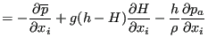 |
||
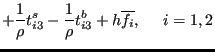 |
(746) |
were an artifical pressure has been defined by:
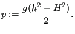 |
(747) |
Since there is no variation in depth direction and setting
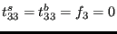
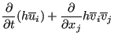 |
||
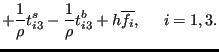 |
(748) |
This amounts to the conservation of momentum equation (695) for a
compressible fluid with the density  replaced by
replaced by  ,
,  replaced by
,
replaced by
,  replaced by
,
replaced by
,  neglected and
replaced by
neglected and
replaced by
| (749) |
The friction stress at the bottom is frequently modeled by a hydraulic resistance type formula such as
| (750) |
The energy equation can be integrated in a similar way. I can be used of some fluid at a higher temperature is released into the flow and one would like to study the spread of the heat. The equation for incompressible flow runs:
| (751) |
Integrating from -H to  yields:
yields:
| (752) |
Terms 3, 6 and 8 on the left hand side and term 6 on the right hand side are zero (no velocity at the bottom and no change in time of the bottom level). Terms 2, 5 and 7 on the left hand side disappear due to Equation (738). The integral in the first term on left hand side is replaced by definition by and the integral in the fourth term is approximated by . The variables and in the second term on the right hand side are the heat flux flowing out of the fluid at the surface and the bottom, respecitively.
Substituting the expression for the pressure, i.e. Equation (733) into the third term on the right hand side yields (the summation in that term really only extends from 1 to 2 since is neglegible):
| (753) |
The first and the fourth term on the right hand side is neglected and the eighth term is approximated by . This finally yields:
| (754) |
This is equivalent to the energy equation for compressible fluids with  replaced by
replaced by  and appropriate source terms. The neglection of the stress and
conduction terms (except in -direction) can be obtained by setting
. No specific gas constant has to be defined. The parameter
COMPRESSIBLE on the *CFD card has to be replaced by the SHALLOW
WATER parameter. The pressure initial and boundary conditions have to be
replaced by conditions for
. If corresponds to
the fluid surface in rest, the initial conditions ususally reduce to
.
and appropriate source terms. The neglection of the stress and
conduction terms (except in -direction) can be obtained by setting
. No specific gas constant has to be defined. The parameter
COMPRESSIBLE on the *CFD card has to be replaced by the SHALLOW
WATER parameter. The pressure initial and boundary conditions have to be
replaced by conditions for
. If corresponds to
the fluid surface in rest, the initial conditions ususally reduce to
.